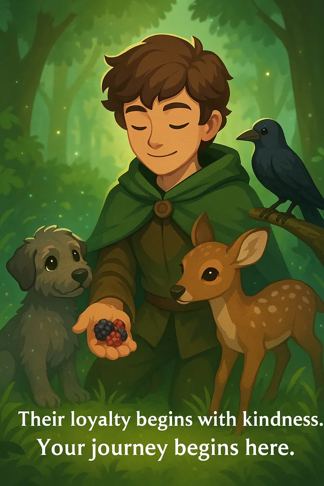
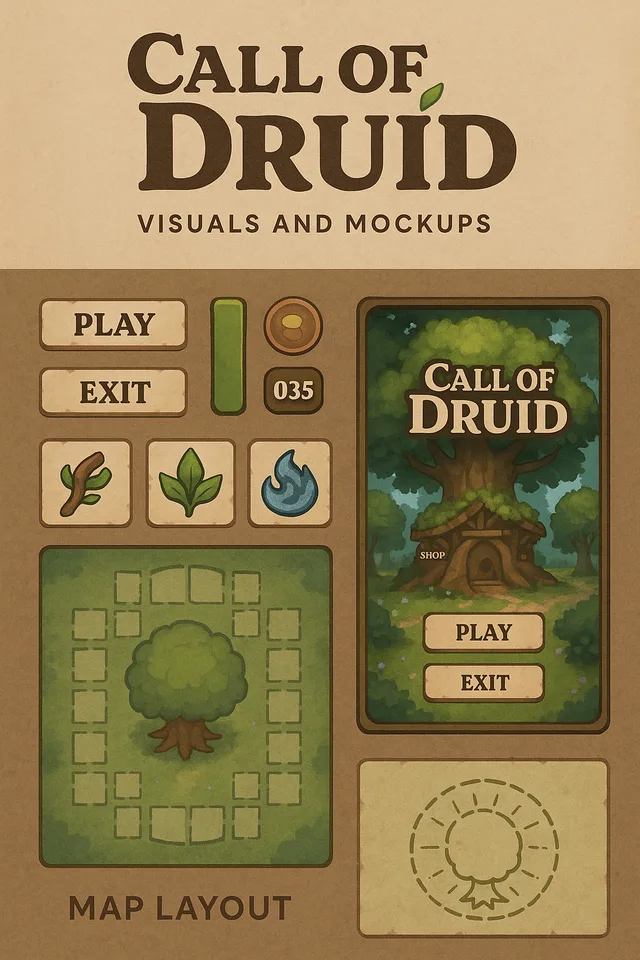

Irish Wolfhound
Steady · Loyal
A PetalScroll Studios game
A light-fantasy journey through Celtic and Gallic-influenced wilds, where trust grows slowly and creatures decide whether to walk beside you.
About the game
Call of the Druid draws on first–fourth century Celtic and Gallic influence while keeping a light-fantasy sense of quiet wonder. Nature, folklore, and creature relationships shape the experience.
Trust, capture, and bonding are central ideas. The creatures are not merely inventory: each relationship is meant to feel earned.

The locked opening creature direction is focused and intentional.
Steady · Loyal
Watchful · Gentle
Curious · Knowing
Three connected ideas guide the relationship between druid and creature.
Approach the living world with patience and attention.
Learn the systems that bring a creature into your care.
Build a relationship that continues after the first encounter.

World direction
Celtic Winter
Frosted groves, quiet paths, and an environment where nature remains present even in stillness.
The wider world will be shared as its details are ready, without turning early internal concepts into public promises.
Progress is shared carefully while the game remains in pre-alpha.
Building and revising the game’s core interactions, world, and creature relationships.
Public updates will focus on work that is suitable to show rather than speculative targets.
Testing and community feedback will expand when the project is prepared for it.
Public-safe mood, character, and interface explorations.
